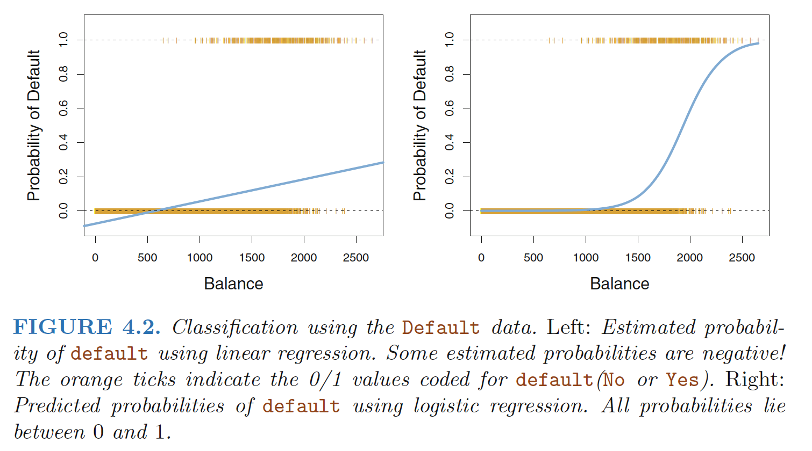
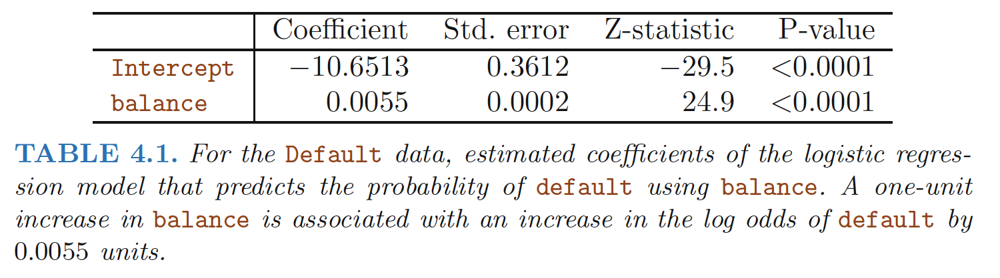
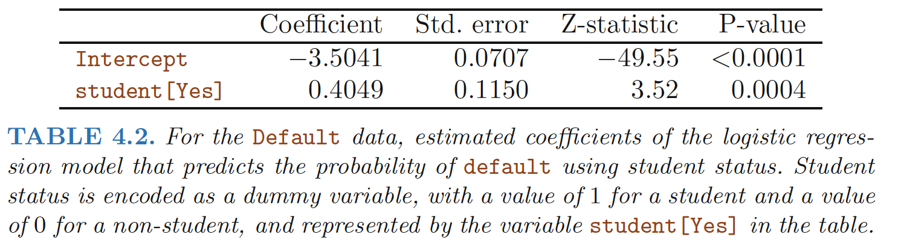
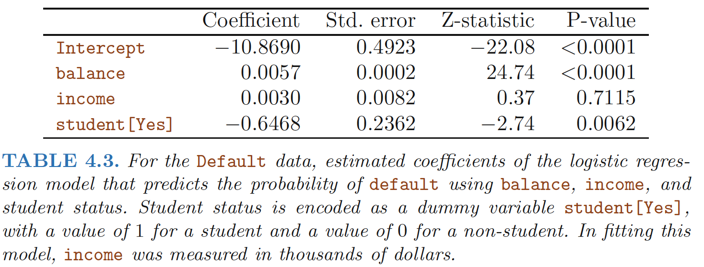

Why Not Linear Regression?
Linear regression is not appropriate in the case of a qualitative response.
Reason: there is no natural way to convert a qualitative response variable with more than two levels into a quantitative response that is ready for linear regression.
Setting: For the Default data, logistic regression models the probability of default. For example, the probability of default given balance can be written as \(Pr(default = Yes|balance).\)

The Logistic Model
Logistic regression involves directly modeling Pr(Y = k|X = x) using the logistic function for the case of two response classes
Logistic function:
\[\begin{align} p(X)=\frac{e^{\beta_0+\beta_1X}}{1+e^{\beta_0+\beta_1X}} \\ \frac{p(X)}{1-p(X)}=e^{\beta_0+\beta_1X} \end{align}\]
Odds
The quantity p(X)/[1−p(X)] is called the odds, and can take on any value odds between 0 and ∞. Values
Log-odds (Logit)
\[\begin{align} \log{\frac{p(X)}{1-p(X)}}=\beta_0+\beta_1X \end{align}\]
We see that the logistic model (4.2) has a logit that is linear in X.
There is not a straight-line relationship between p(X) and X,
The rate of change in p(X) per unit change in X depends on the current value of X,
Estimating the Regression Coefficients
The basic intuition behind using maximum likelihood to fit a logistic regression model is as follows: - We seek estimates for β0 and β1 such that the predicted probability $(x_i) of class "default" for each individual, using (4.2), corresponds as closely as possible to the individual’s observed "default" status. In other words, we try to find ˆ β0 and ˆ β1 such that plugging these estimates into the model for p(X), given in (4.2), yields a number close to one for all individuals who "defaulted", and a number close to zero for all individuals who did not.
Likelihood function:
\[\begin{align} l(\beta_0,\beta_1)=\prod_{i:y_i=1}p(x_i) \prod_{i^{'}:y_{i^{'}}}(1-p(x_{i^{'}})) \end{align}\]
The estimates \(\hat{\beta_0}\) and \(\hat{\beta_1}\) are chosen to maximize this likelihood function.
In the linear regression setting, the least squares approach is in fact a special case of maximum likelihood.
Making Predictions
Once the coefficients have been estimated, it is a simple matter to compute the probability of default for any given credit card balance.

For example, using the coefficient estimates given in Table 4.1, we predict that the default probability for an individual with a balance of $1, 000 is
\[\begin{align} \hat{p}(X)=\frac{e^{\hat{\beta_0}+\hat{\beta_1}X}}{1+e^{\hat{\beta_0}+\hat{\beta_1}X}}=\frac{e^{−10.6513+0.0055×1,000}}{1+e^{−10.6513+0.0055×1,000}}=0.00576 \end{align}\]
Multiple Logistic Regression
We now consider the problem of predicting a binary response using multiple predictors
Log-odds (Logit)
\[\begin{align} \log{\frac{p(X)}{1-p(X)}}=\beta_0+\sum_{i=1}^p\beta_iX \end{align}\]
where X = (X1, . . .,Xp) are p predictors
Logistic function:
\[\begin{align} p(X)=\frac{e^{\beta_0+\sum_{i=1}^p\beta_iX}}{1+e^{\beta_0+\sum_{i=1}^p\beta_iX}} \\ \frac{p(X)}{1-p(X)}=e^{\beta_0+\sum_{i=1}^p\beta_iX} \end{align}\]
Confounding
In single variable setting: 
In multiple variables setting: 
How is it possible for student status to be associated with an increase in probability of default in Table 4.2 and a decrease in probability of default in Table 4.3?

- The positive coefficient for student in the single variable logistic regression : the overall student default rate is higher than the non-student default rate
- The negative coefficient for student in the multiple logistic regression: for a fixed value of balance and income, a student is less likely to default than a non-student.
Reason:The variables student and balance are correlated.
Intuition: A student is riskier than a non-student if no information about the student’s credit card balance is available. However, that student is less risky than a non-student with the same credit card balance!